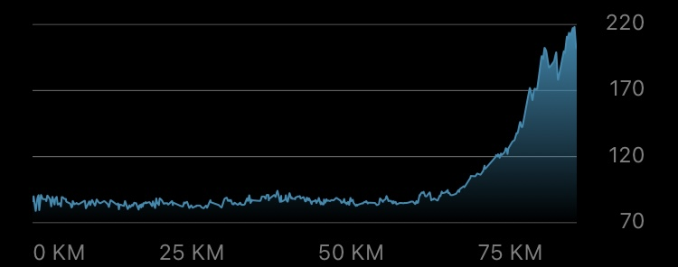
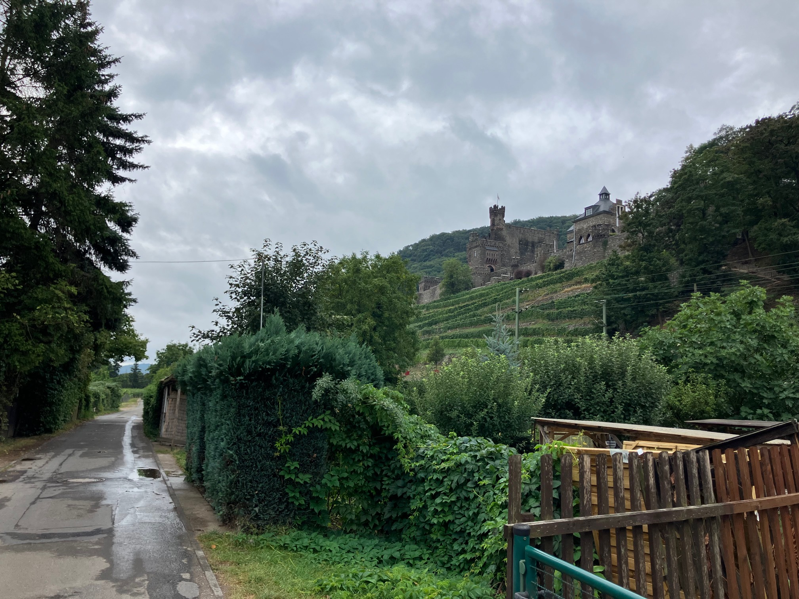
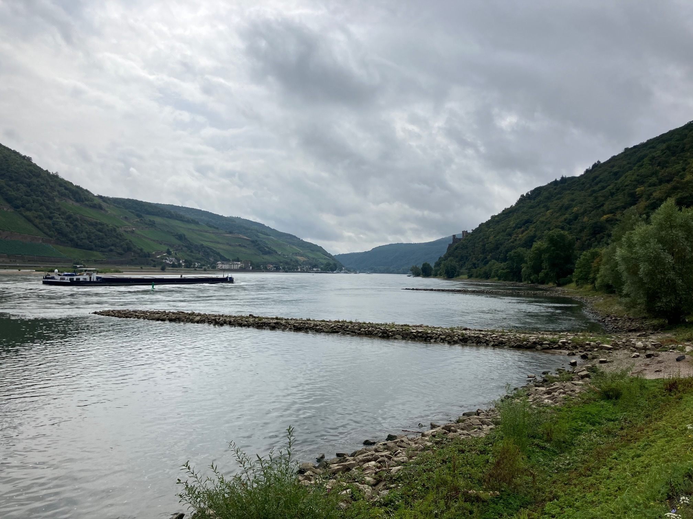
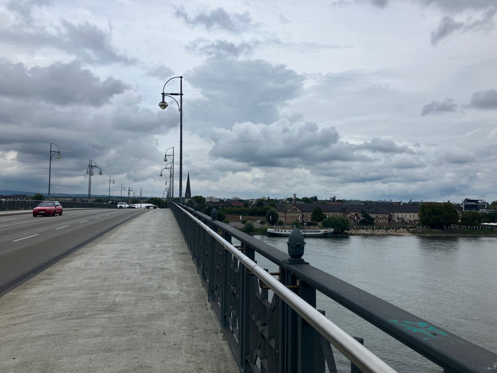
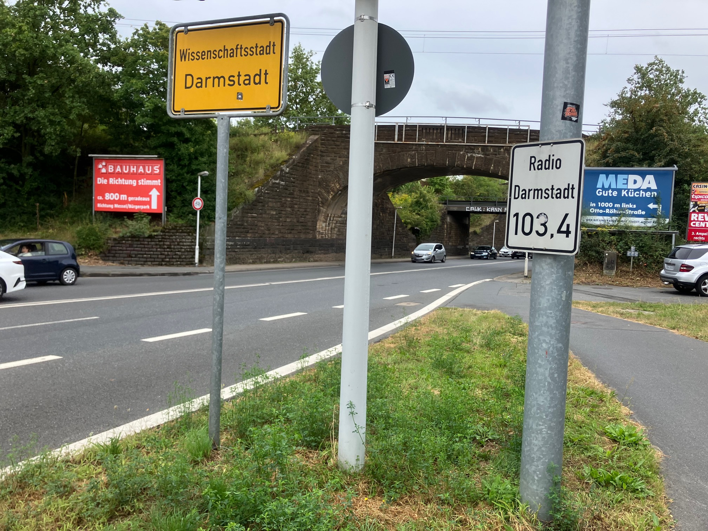

Daily Stats*
| Distance |
85.76 km |
| Time |
4:20:27 h |
| Avg. Speed |
19.9 km/h |
| Max. Speed |
32.0 km/h |
| Avg. Heart Rate |
129 bpm |
| Uphill |
323 m |
| Downhill |
201 m |
| Avg. Temperature** |
19.0 °C |

Elevation profile [m]
*measured by Garmin Forerunner 945 & Sigma ROX 4.0
**measured at the lower back
Daybook
On the second-last day of the tour, I planned to travel from Trechtingshausen along the Rhine via Darmstadt to Roßdorf, making a final stop at my mother's place before heading on to Heidelberg. At around 85 km, this route is rather moderate to long, but very flat for most of the time, and somehow I could certainly build on the motivation boost of returning home as well!
So I set off at around 11 am on a relatively cloudy day (at least there was no rain to start with) and moderate temperatures of about 19°C. Since it's easier to ride in good sportswear (scientifically proven?), I dressed in my best cycling outfit for the day, wearing a white jersey and white gloves – in this case probably representing the top "old" amateur on a touring bike, or something like that :-) After passing Reichenstein Castle (see first impression) and Rheinstein Castle, I quickly reached Bingen am Rhein with a fantastic view of the river (see second impression).
The next part of the route was mostly along the dike, which meant the Rhine was hidden behind a natural barrier and the vegetation along the riverbank. It was actually fun riding there because you can easily keep up a high average speed of around 25 km/h and you're kind of protected from the wind. But I probably also pressed the accelerator a little to get to my grandparents' for lunch faster ;-)
After about 40 km, I reached the Mainz district of Mombach. The nature along the dike transformed into an industrial, urban street design, and amid traffic islands and roads, I snaked my way toward the old town. There, once I had carried my bike up a few steps due to a road closure, I crossed the Theodor Heuss Bridge (see third impression), which leads over the Rhine to Mainz-Kastel. A few minutes later, behind Gustavsburg and Ginsheim, the landscape opened up, and the route led over country lanes towards Trebur. It seemed like the headwind kicked in here, which really put some strain on my thighs, but even though they were quietly complaining, there was still enough energy left!
The last 20 km to Darmstadt varied between through-towns (Groß-Gerau, Büttelborn, Weiterstadt) and in-between country roads or dirt tracks. Around 3 pm, approximately three and a half hours into the ride, I stepped into the Pallaswiesen district in Darmstadt — physically unaffected except for a few symptoms of tiredness, just about ready for lunch! This need would soon be satisfied by fried potatoes, some meat, carrot and apple salad, and apple pie at my grandparents' house :-)
However, I hadn't reached my destination for the day yet: I still had about 8 km to go to Roßdorf, and unfortunately it started raining just as I left Darmstadt. Through the damp forest, over gravel paths and grass verges, I made my way through the Scheftheim meadows to the Roßdorf industrial park. Soaked and with plenty of mud splatters at the back of my bike, I finally arrived at my mother's place, just under 7 hours after leaving Trechtingshausen.
It's really nice to be back in my home region after spending a few weeks somewhere new and different! Tomorrow's the last leg of the trip, just a chill ride back to where it all started, my hometown of Heidelberg. I'll share more about this trip afterwards ;-)
Impressions

Departure from Trechtingshausen with a view of Reichenstein Castle

Rhine panorama near Bingen

Crossing the Theodor Heuss Bridge from Mainz-Altstadt to Mainz-Kastel

Arrival in Darmstadt